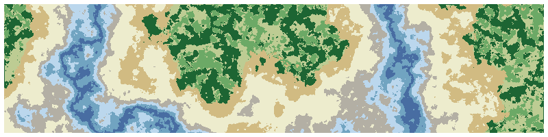
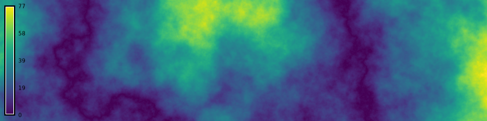
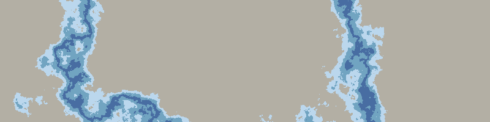
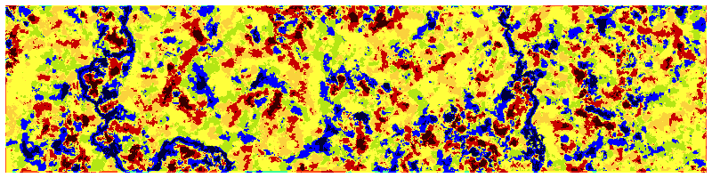
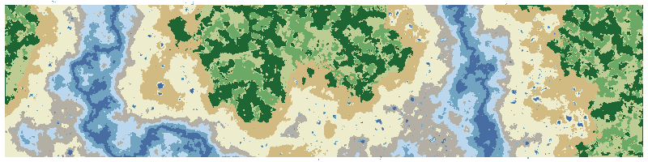
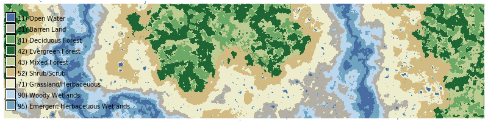
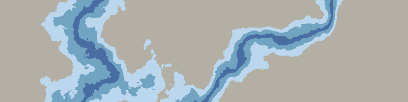
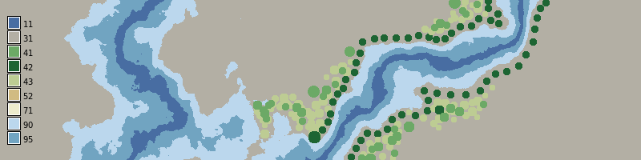

# Import modules
import io
import sys
import subprocess
from pathlib import Path
from contextlib import suppress
# Find GRASS Python packages
sys.path.append(
subprocess.check_output(
["grass", "--config", "python_path"],
text=True
).strip()
)
# Import GRASS packages
import grass.script as gs
import grass.jupyter as gj
from grass.tools import Tools
# Create and initialize GRASS project
try:
gj.init("cartesian")
except ValueError:
with suppress(ValueError):
gs.create_project("cartesian")
gj.init("cartesian")
tools = Tools(overwrite=True)
tools.g_proj(format="plain", flags="p").textLandscape Modeling
tutorial
ecology
grass
python
Landscape modeling with GRASS.

Learn how to generate fractal terrain, derive landcover from the terrain, and draw landcover with the raster digitizer.
| Value | Category |
|---|---|
| 11 | Open Water |
| 21 | Developed, Open Space |
| 22 | Developed, Low Intensity |
| 23 | Developed, Medium Intensity |
| 24 | Developed, High Intensity |
| 31 | Barren Land |
| 41 | Deciduous Forest |
| 42 | Evergreen Forest |
| 43 | Mixed Forest |
| 52 | Shrub/Scrub |
| 71 | Grassland/Herbaceuous |
| 81 | Pasture/Hay |
| 82 | Cultivated Crops |
| 90 | Woody Wetlands |
| 95 | Emergent Herbaceuous Wetlands |
Setup
Start a GRASS session in a project with a Cartesian coordinate system.
Set computational region
# Set region
tools.g_region(n=200, s=0, e=800, w=0, res=1)Generate fractal terrain
# Generate fractal terrain
tools.r_surf_fractal(output="fractal", dimension=2.25, seed=24)
# Model river valleys
tools.r_mapcalc(expression="terrain = abs(fractal) / 10")
# Visualize
m = gj.Map(width=800)
m.d_rast(map="terrain")
m.d_legend(raster="terrain", at=(5, 95, 1, 3))
m.show()
m.save("images/landscape-01.webp")
# Print elevation range
info = tools.r_info(map="terrain", flags="r", format="json")
print(f"Mininum elevation: {info["min"]:05.2f}")
print(f"Maximum elevation: {info["max"]:05.2f}")
Model rivers
# Derive river from elevation gradient
tools.r_mapcalc(expression = "landcover = if(terrain <= 2, 11, 31)")
# Derive wetlands from elevation gradient
tools.r_mapcalc(expression = "landcover = if(terrain > 2 && terrain <= 6, 95, landcover)")
# Derive woody wetlands from elevation gradient
tools.r_mapcalc(expression = "landcover = if(terrain > 6 && terrain < 10, 90, landcover)")
# Set landcover colors
tools.r_colors(map="landcover", color="nlcd")
# Visualize
m = gj.Map(width=800)
m.d_rast(map="landcover")
m.show()
m.save("images/landscape-02.webp")
Classify landforms
# Classify landforms
tools.r_grow(input="terrain", output="elevation", radius=25)
tools.r_geomorphon(elevation="elevation", forms="landforms", search=25, skip=5, flat=1, dist=0)
# Visualize
m = gj.Map(width=800)
m.d_rast(map="landforms")
m.show()
m.save("images/landscape-03.webp")
Model uplands
# Derive grass from elevation gradient
tools.r_mapcalc(expression = "landcover = if(terrain > 15, 71, landcover)")
# Derive shrubs from elevation gradient
tools.r_mapcalc(expression = "landcover = if(terrain > 30, 52, landcover)")
# Derive shrubs from landforms
tools.r_mapcalc(expression = "landcover = if(landcover == 71 & terrain > 25 & landforms < 7, 52, landcover)")
# Derive deciduous forest from elevation gradient
tools.r_mapcalc(expression = "landcover = if(terrain > 35, 41, landcover)")
# Derive mixed forest from landforms
tools.r_mapcalc(expression = "landcover = if(terrain > 35 && landforms == 6, 43, landcover)")
# Derive evergreen forest from landforms
tools.r_mapcalc(expression = "landcover = if(terrain > 35 && landforms < 6, 42, landcover)")
# Visualize
m = gj.Map(width=800)
m.d_rast(map="landcover")
m.show()
m.save("images/landscape-04.webp")Model wetlands
# Find depressions
tools.r_fill_dir(input="terrain", output="fill", areas="areas", direction="direction")
# Calculate depth
tools.r_mapcalc(expression = "ponds = terrain - fill")
# Derive ponds from depressions
tools.r_mapcalc(expression = "landcover = if(terrain > 10 && terrain < 30 && ponds < -0.5, 11, landcover)")
# Derive wetlands from depressions
tools.r_mapcalc(expression = "landcover = if(terrain > 10 && terrain < 30 && ponds < -0.5 && ponds > -1.0, 95, landcover)")
# Visualize
m = gj.Map(width=800)
m.d_rast(map="landcover")
m.show()
m.save("images/landscape-05.webp")
Define landcover categories
categories = """\
11|Open Water
12|Perennial Ice/Snow
21|Developed, Open Space
22|Developed, Low Intensity
23|Developed, Medium Intensity
24|Developed, High Intensity
31|Barren Land
41|Deciduous Forest
42|Evergreen Forest
43|Mixed Forest
51|Dwarf Scrub
52|Shrub/Scrub
71|Grassland/Herbaceuous
72|Sedge/Herbaceous
73|Lichens
74|Moss
81|Pasture/Hay
82|Cultivated Crops
90|Woody Wetlands
95|Emergent Herbaceuous Wetlands
"""# Set landcover categories
tools.r_category(map="landcover", separator="pipe", rules=io.StringIO(categories))
# Visualize
m = gj.Map(width=800)
m.d_rast(map="landcover")
m.d_legend(raster="landcover", at=(5, 95, 1, 3), use=(11,31,41,42,43,52,71,90,95))
m.show()
m.save("images/landscape-06.webp")
Draw landcover
# Generate fractal terrain
# tools.r_surf_fractal(output="fractal", dimension=2.25, seed=27)
tools.r_surf_fractal(output="fractal", dimension=2.01, seed=27)
# Model river valleys
tools.r_mapcalc(expression="terrain = abs(fractal) / 10")
# Derive river from elevation gradient
tools.r_mapcalc(expression = "landcover = if(terrain <= 2, 11, 31)")
# Derive wetlands from elevation gradient
tools.r_mapcalc(expression = "landcover = if(terrain > 2 && terrain <= 6, 95, landcover)")
# Derive woody wetlands from elevation gradient
tools.r_mapcalc(expression = "landcover = if(terrain > 6 && terrain < 10, 90, landcover)")
# Set landcover colors
tools.r_colors(map="landcover", color="nlcd")
# Visualize
m = gj.Map(width=800)
m.d_rast(map="landcover")
m.show()
m.save("images/landscape-07.webp")
# Digitize
tools.g_gui_rdigit(edit="landcover", type="CELL")
# Set landcover categories
tools.r_category(map="landcover", separator="pipe", rules=io.StringIO(categories))
# Visualize
m = gj.Map(width=800)
m.d_rast(map="landcover")
m.d_legend(raster="landcover", at=(5, 95, 1, 3), use=(11,31,41,42,43,52,71,90,95))
m.show()
m.save("images/landscape-08.webp")